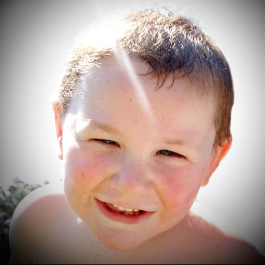

Beaudry, Alex Patrick
February 2, 2007 - March 12, 2012

Surrounded by family and friends, Alex passed away peacefully at SickKids Hospital in Toronto on March 12, 2012. Both doctors and Alex have battled the cancer for nearly 4 years giving him a chance for longer and better life. In the end the illness came back in the way that was beyond the point of treatment.
He will be deeply missed by his mother Terra Williams (nee Hebert). His father Andrew Beaudry and his big sister Brooke. He will be fondly remembered by his grand parents, "Grandpa" Damase, "Nana" Marion, "Grandma Patsy", "Poppy" Al, "Grandma Terri" and "Grandpa Cliff". He will be sadly missed by his great grandparents, "Memere", "Grandpa Phil", "Nana Helen" & "Gigi". Predeceased by his great grandpa Alexis and grandpa Wayne.
Also greatly missed by auntie Angel (California), auntie Marie (Oshawa), auntie Amy & uncle Paul (Bradford), uncle Chad and auntie Sheri (Oshawa) and his cousins he loved so much Amber, Kyle, Trey, Devyn, and Liam. And all the other great aunts, great uncles and many cousins.
Very special thank you to Alex's team at Sick Kids, Dr. Sylvain Baruchel, Denise Mills, Karen Fung and all the nurses and support staff. As well as his nurses Yvette and Lynn and special friend Larry at the Satellite Oncology Suite at Rouge Valley Hospital in Scarborough. Also to Dr. Tiera and Dr. Lambert for treatment Alex received in Montreal at CHU St-Justine Hospital.
Thank you to the wonderful Camp Ooch councilors and all the many friends he made at camp and at SickKids.
Alex's life was happy and full of his favorite activities. He was an avid train, car and truck enthusiast. He loved movies with his all time favorite "Cars"! He was on a mission to beat his sister at "Mario Kart" on the Wii. He spent hours playing with his fire and rescure toys. He loved making friends with the kids from the school just past the backyard. And we can't forget his love of animals especiallly the dogs next door Tazer & Rocky!
Alex's family is proud to say his legacy will live on by donating his organs for the purpose of research in hopes of better treatment and someday a cure for Neuroblastoma.
In lieu of flowers, donations would greatly be appreciated to the Sickkids Foundation in memory of Alex Beaudry.